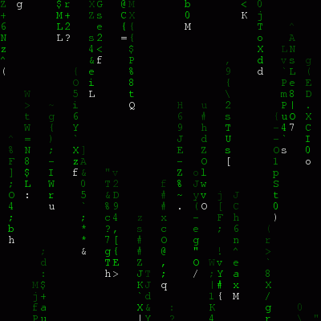

Cincinnati Children's Hospital Medical Center - Weirauch Lab
Kevin Ernst / @ernstkiprint statement is now
a function (requires parens)
# Python 2.x
print "Hello from Python 2.7.something!"
# Python 3.x
print("Hello from Python 3!")
# Python 2.7.x - use 'print()' for forward compatibility
from __future__ import print_function
print("Hello from Python 3!")/)returns a float by default (use //
for the "flooring" version)python <<<'import this')
Warning: not comprehensively researched—but Python is not an esoteric language by any means
help() function;
iPython adds method completionThis used to be a difficult question, but now it's easy: the CPython 2.7.x series will (reportedly) no longer be maintained after 2020.
2to3 installed
on every computer with Python 3
tkinter library); in English and German
You already have it; type python in the shell.
You might want to install the python-pip
package from your package manager, though.
The official
"Python for Windows" installers
are often enough (they include pip and will update
your system environment variables to add Python to your %PATH%
However, you may prefer Anaconda if you're
using a lot of scientific libraries,
or need to use third-party
libraries that require compilation.
# Install Python and override the system Python interpreter
sudo port install python27
# You can check the current setting with 'port select --list python'
sudo port select --set python python27
# For the "improved" Python REPL (interactive mode)
sudo port install py27-ipython
sudo port select --set ipython py27-ipython
# Matplotlib and NumPy (pulls in LLVM and X dependencies--grab a coffee)
sudo port install py27-matplotlib py27-numpy
sudo port install py27-jupiter
# Starting the notebook server (opens automatically in default browser)
jupiter-notebook-2.7
In principle, similar to Mathematica's
notebooks
or Matlab's cell publishing mode

pyplot tutorialgist Ruby gem - create GitHub gists from the command line